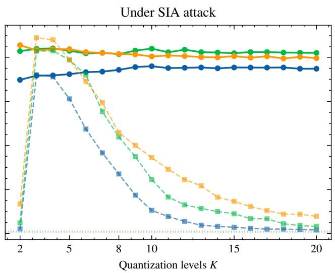

FigFig. S2. Clean mAP vs. SIA mAP trade-off on rOxford5k for Floyd–Steinberg dithering (K=2–20) across three DINOv2 sizes. Solid: FS + blur; dashed: FS only. Crosses (×): no defense (near-zero SIA mAP). The Pareto frontier shifts upward with model size; ViT-L achieves near-baseline clean and adversarial mAP simultaneously.这张图来自论文 PDF 的结构化抽取。当前用于辅助理解 Dithering Defense 的方法或实验，请结合正文精读段落一起看。

FigFig. S1. Retrieval mAP (easy) on rOxford5k as a function of quantization levels K for three DINOv2 backbone sizes. Solid lines with circles: FS + blur; dashed lines with squares: FS without blur. Dotted horizontal lines: undefended baselines. Left: clean images. Right: under SIA attack. Larger models tolerate coarser quantization and show less clean degradation.这张图来自论文 PDF 的结构化抽取。当前用于辅助理解 Dithering Defense 的方法或实验，请结合正文精读段落一起看。